Changers, Keepers
Felipe Romero, WashU
Beniamino Volta, UCSD
Bad people are less a problem than indifferent people.
- Gerhard Kocher
Introduction
Making political changes is difficult not because people don't want changes, but because the majority are not actively trying to make those changes happen. We decided to model the dynamics of political commitments following this intuition. What are the circumstances that might lead these indifferent agents to become politically active? We were also interested in capturing the way governments or regimes react to the growth of an opposition movement by using repressive tactics, which have the effect of discouraging undecided people from joining activist movements.
Assumptions
1. We distinguish three types of agents:
2. Agents have a “Happiness Level”. This value represents factors such as socio-economic status that influence how satisfied the agent feels in the society.
3. The government reacts to the growth of changers by repressing them and supporting the keepers. We model a government’s tendency to repress as a “Political Enforcement Level”. Different political regimes react more or less strongly based on this level.
4. Agents have “Neighbors”. These represent other agents who can “convince” undecided agents to join their position. That is, following the influence of their neighbors, undecided agents can potentially become either changers or keepers.
The Model
The following UML diagram represents the main entities of the model, their attributes and main functions. The world consists of a set of countries and each country has a set of changers, keepers, and undecided agents. Each agent has a fixed number of neighbors.
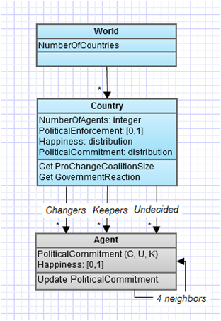
The type of each agent is assigned initially based on the PoliticalCommitment distribution of the country. To model the neighbors relations we use a lattice, as exemplified in the following figure:
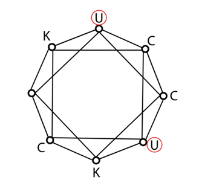
Dynamics
Let L be the lattice of agents, with Changers ⊆ L and Keepers ⊆ L and Undecided ⊆ L. Every agent i has some commitment (i.e., Li {C,K,U}). Let Ni be the set of neighbors of i, and ci and ki be the number of changer neighbors and keeper neighbors of i respectively.
In each step of the simulation, we go around the set of Undecided, updating their political commitment. To do so, we first compute a reaction factor r, given by
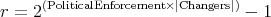
This function captures the idea that the government reacts faster depending on its political enforcement, and reacts faster as the number of changers increases.
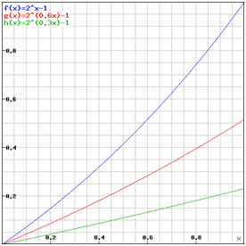
Values of reaction factor r for different values of political enforcement
(green = 0.3; red = 0.6; blue = 1) plotted against relative amount of changers in the population.
There are three possible ways in which an agent can update her commitment. If ki > ci, then
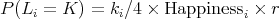
This means that if the agent is surrounded mostly by keepers, there is a certain probability that she is going to be influenced to be a keeper, which is determined by the proportion of keepers (i.e., ki∕4), her happiness, and the reaction of the government.
The second case is similar. If ki < ci, then
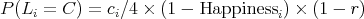
which determines the probability of becoming a changer, depending on the proportion of changers, the unhappiness and the reactiveness of the government.
Finally, if ki = ci, then the agent doesn’t update her political commitment. This captures the intuition that an undecided person doesn’t become less undecided if she is in a group in which opposing opinions are balanced.
We implemented this model using R. The source code is available here.
Results
For the purposes of the present exercise, we tested scenarios with only one country. We began exploring model behavior by running it with a uniform initial distribution of political commitment values (C, K, U), random distribution of agent happiness values, and testing over the range of values of political enforcement. As expected, the government reacts more strongly and more rapidly to the growth of changers with higher political enforcement values. In some cases, this can lead to a leveling off of the growth of the opposition movement, eventually reaching a stable state. Since the government reaction also acts to support the keepers movement, these tend to grow more rapidly at the same time as the growth of the changers is being slowed down. The success of the changers’ “revolution” thus depends on the interaction between political enforcement values and the initial relative quantities of C, K, and U.
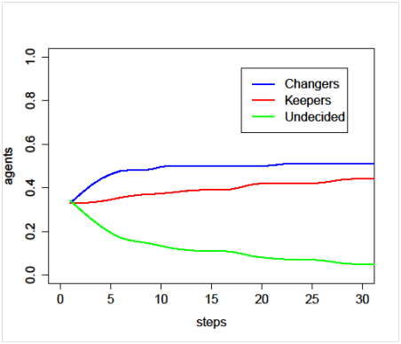
Uniform initial distribution of political commitment, medium political enforcement.
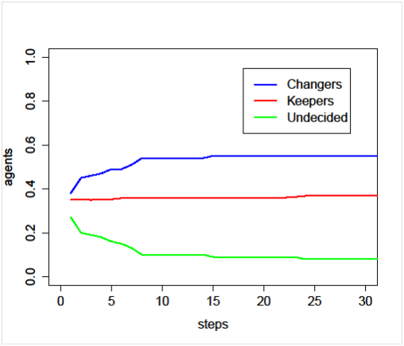
Uniform initial distribution of political commitment, low political enforcement.
We then moved on to testing scenarios with equally small initial amounts of changers and keepers. With low political enforcement levels and random happiness levels, there is little resistance to the rapid growth of the opposition movement, whereas the growth rate of the keepers is much lower due to low support from the government. The changers movement gains even more momentum if we lower the overall happiness levels. If the country has a relatively happy population, on the other hand, agents will be more likely to join the keepers party and the opposition movement will fail to expand.
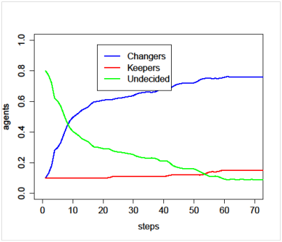
Equally low initial values of changers and keepers, low happiness, low political enforcement.
As agents do not have a mechanism to reverse their choice once they have decided to become changers or keepers, the model always ends in equilibrium conditions. An intriguing pattern we observed in the results is that the number of keepers at the end of the model displays a much stronger correlation to the initial political enforcement value than does the number of changers. This likely results from the form of the exponential curve that we chose for the government reaction. Even when initial political enforcement values are high, the government reaction will stay low until the changers have grown to a certain size.
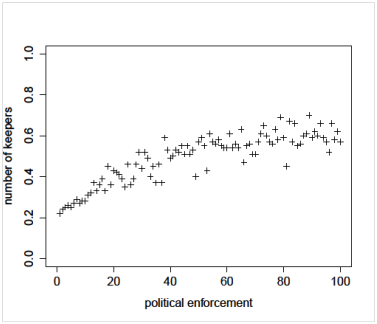
Final amount of keepers plotted against political enforcement values.
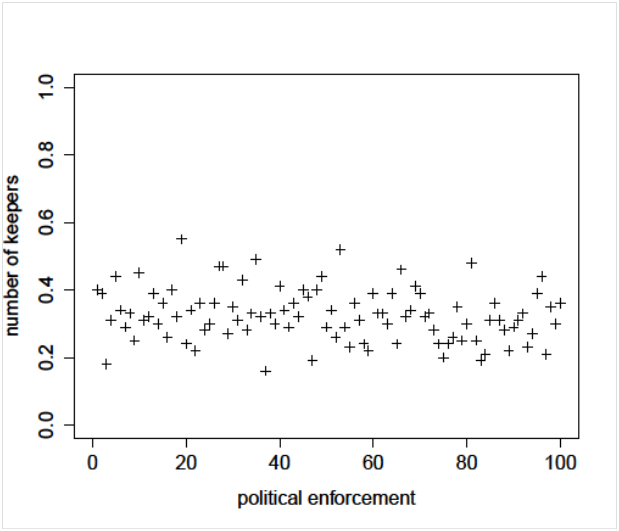
Final amount of changers plotted against political enforcement values
We were especially interested in testing initial conditions and parameter values that replicate the situations in which revolutionary movements develop in the real world. In many cases, these are countries with relatively high levels of political repression and an already established pro-government political party. Interestingly enough, in these scenarios, the fact that one group is slightly ahead of the other leads to a fast reaction to revert the situation. In the example below, the initial fast growth of the changers movement leads them to outnumber the keepers, until the response of the government levels out the growth and allows the keepers to overtake them.
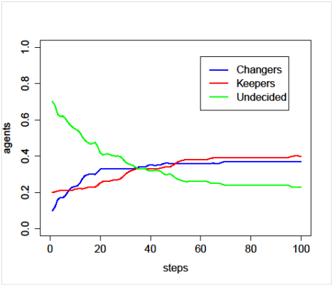
Established keepers party, low initial number of changers, medium enforcement.
If we lower the initial size of changers only slightly, the government response begins to limit their growth sooner, meanwhile pushing the keepers to recruit more and more agents from the undecided population.
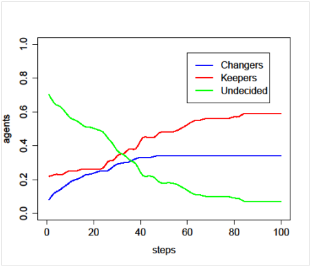
Established keepers party, low initial number of changers, medium enforcement.
Comments
We think our model has the potential to provide some insights into the dynamics of the spread of revolutionary movements, and especially on how the varying intensity of government response can interact with their growth. More in general, the simplicity of our model makes it easily applicable to other cases that involve binary group choices between an established position or attitude and a new one (e.g., the case of epistemic disagreement in philosophy, and paradigm shifts)
We think it would be interesting to explore a number of changes/improvements to our model:
• Analyzing the impact of different government response functions on model dynamics.
• Testing the effect of different shapes of population happiness distributions.
• Expanding the model by having multiple countries with different levels of political enforcement and allowing for interaction between the changers movements in each country.
• Allowing agents to change their political commitment value.
• Measuring size and spatial distribution of clusters of changers and keepers.
• Changing the shape of the network.